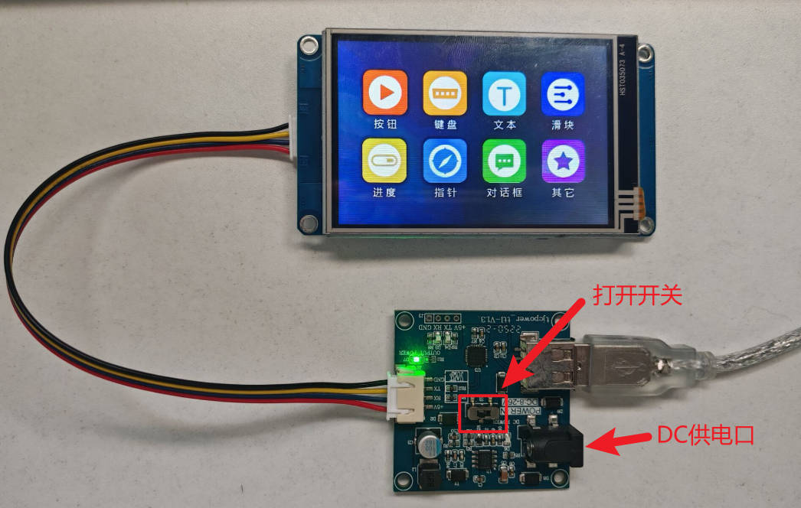
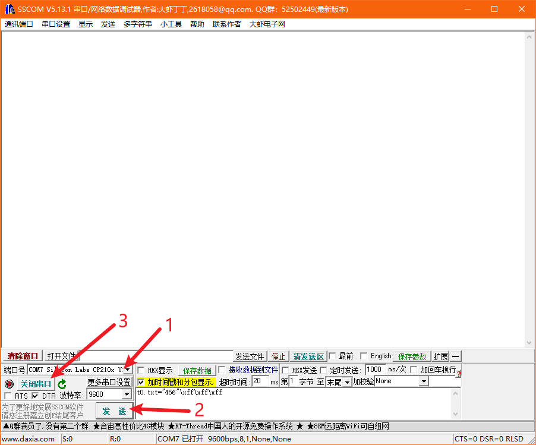
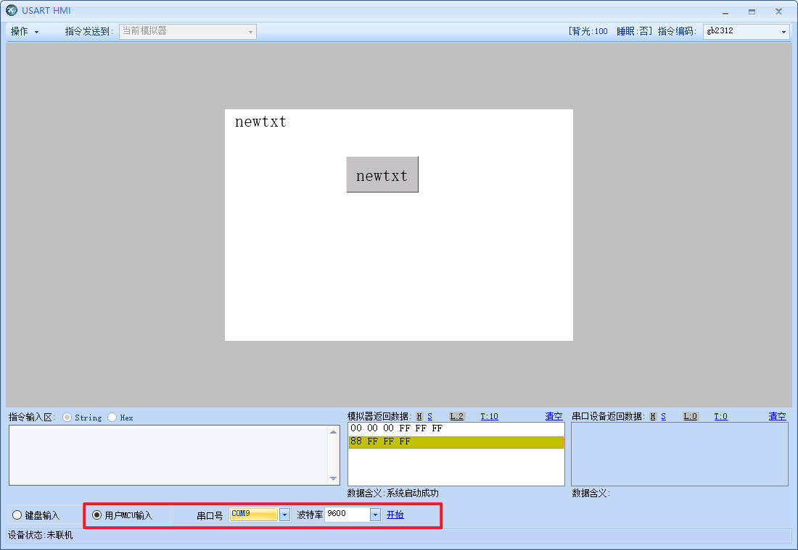
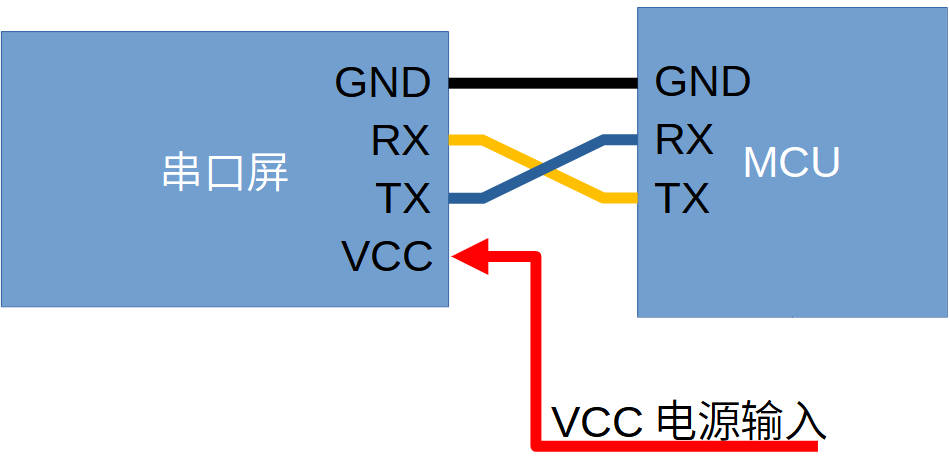

串口屏调试入门
sscom调试串口屏实物

按这个方法接好之后，打开sscom5.13.1
依次选择端口号，设置波特率，打开串口

就可以编写串口指令了，sscom上发出来的指令要加上结束符，串口屏才会执行
t0.txt="456"\xff\xff\xff
\xff\xff\xff就是结束符，通过串口发给屏幕的每条指令最后都要加上结束符
模拟器接单片机

在调试界面，选择来自单片机的串口，点击开始，即可让模拟器与单片机进行通讯
串口屏接单片机

串口屏的GND要和单片机的GND接在一起，也就是共地
串口屏的TX（发送）接单片机的RX（接收）
单片机的TX（发送）接串口屏的RX（接收）
然后给屏幕的VCC输入合适的电源电压即可